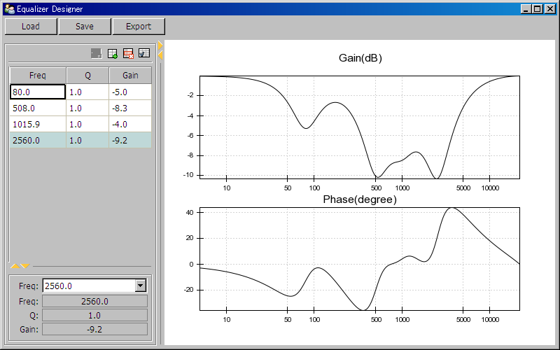

相关文档： 数字信号系统
用Traits.UI和Chaco制作的二次均衡器的设计工具，用户可以任意添加二次滤波器，并且调整其中心频率、增益和Q值，并即时查看组合之后的最终频率响应。
# -*- coding: utf-8 -*-
import math
from enthought.traits.api import Float, HasTraits, List, Array, on_trait_change, Instance, Range, Button
from enthought.traits.ui.api import View, TableEditor, Item, Group, HGroup, VGroup, HSplit, ScrubberEditor, EnumEditor
from enthought.traits.ui.table_column import ObjectColumn
from enthought.chaco.api import Plot, AbstractPlotData, ArrayPlotData, VPlotContainer
from enthought.chaco.tools.api import PanTool, ZoomTool
from enthought.enable.api import Component, ComponentEditor
from enthought.pyface.api import FileDialog, OK
import pickle
import numpy as np
SAMPLING_RATE = 44100.0 # 取样频率
WORN = 1000 # 频率响应曲线的点数
# 对数圆频率数组
W = np.logspace(np.log10(10/SAMPLING_RATE*np.pi), np.log10(np.pi), WORN)
# 对数频率数组
FREQS = W / 2 / np.pi * SAMPLING_RATE
# 候选频率
EQ_FREQS = [20.0,25.2,31.7,40.0,50.4,63.5,80.0,100.8,
127.0,160.0,201.6,254.0,320.0,403.2,508.0,640.0,
806.3,1015.9,1280.0,1612.7,2031.9,2560.0,3225.4,
4063.7, 5120.0, 6450.8, 8127.5, 10240.0,12901.6,
16255.0,20480.0,]
def scrubber(inc):
'''创建不同增量的ScrubberEditor'''
return ScrubberEditor(
hover_color = 0xFFFFFF,
active_color = 0xA0CD9E,
border_color = 0x808080,
increment = inc
)
def myfreqz(b, a, w):
'''计算滤波器在w个点的频率响应'''
zm1 = np.exp(-1j*w)
h = np.polyval(b[::-1], zm1) / np.polyval(a[::-1], zm1)
return h
def design_equalizer(freq, Q, gain, Fs):
'''设计二次均衡滤波器的系数'''
A = 10**(gain/40.0)
w0 = 2*math.pi*freq/Fs
alpha = math.sin(w0) / 2 / Q
b0 = 1 + alpha * A
b1 = -2*math.cos(w0)
b2 = 1 - alpha * A
a0 = 1 + alpha / A
a1 = -2*math.cos(w0)
a2 = 1 - alpha / A
return [b0/a0,b1/a0,b2/a0], [1.0, a1/a0, a2/a0]
class Equalizer(HasTraits):
freq = Range(10.0, SAMPLING_RATE/2, 1000)
Q = Range(0.1, 10.0, 1.0)
gain = Range(-24.0, 24.0, 0)
a = List(Float, [1.0,0.0,0.0])
b = List(Float, [1.0,0.0,0.0])
h = Array(dtype=np.complex, transient = True)
def __init__(self):
super(Equalizer, self).__init__()
self.design_parameter()
@on_trait_change("freq,Q,gain")
def design_parameter(self):
'''设计系数并计算频率响应'''
try:
self.b, self.a = design_equalizer(self.freq, self.Q, self.gain, SAMPLING_RATE)
except:
self.b, self.a = [1.0,0.0,0.0], [1.0,0.0,0.0]
self.h = myfreqz(self.b, self.a, W)
def export_parameters(self, f):
'''输出滤波器系数为C语言数组'''
tmp = self.b[0], self.b[1], self.b[2], self.a[1], self.a[2], self.freq, self.Q, self.gain
f.write("{%s,%s,%s,%s,%s}, // %s,%s,%s\n" % tmp)
class Equalizers(HasTraits):
eqs = List(Equalizer, [Equalizer()])
h = Array(dtype=np.complex, transient = True)
# Equalizer列表eqs的编辑器定义
table_editor = TableEditor(
columns = [
ObjectColumn(name="freq", width=0.4, style="readonly"),
ObjectColumn(name="Q", width=0.3, style="readonly"),
ObjectColumn(name="gain", width=0.3, style="readonly"),
],
deletable = True,
sortable = True,
auto_size = False,
show_toolbar = True,
edit_on_first_click = False,
orientation = 'vertical',
edit_view = View(
Group(
Item("freq", editor=EnumEditor(values=EQ_FREQS)),
Item("freq", editor=scrubber(1.0)),
Item("Q", editor=scrubber(0.01)),
Item("gain", editor=scrubber(0.1)),
show_border=True,
),
resizable = True
),
row_factory = Equalizer
)
view = View(
Item("eqs", show_label=False, editor=table_editor),
width = 0.25,
height = 0.5,
resizable = True
)
@on_trait_change("eqs.h")
def recalculate_h(self):
'''计算多组均衡器级联时的频率响应'''
try:
tmp = np.array([eq.h for eq in self.eqs if eq.h != None and len(eq.h) == len(W)])
self.h = np.prod(tmp, axis=0)
except:
pass
def export(self, path):
'''将均衡器的系数输出为C语言文件'''
f = file(path, "w")
f.write("double EQ_PARS[][5] = {\n")
f.write("//b0,b1,b2,a0,a1 // frequency, Q, gain\n")
for eq in self.eqs:
eq.export_parameters(f)
f.write("};\n")
f.close()
class EqualizerDesigner(HasTraits):
'''均衡器设计器的主界面'''
equalizers = Instance(Equalizers)
# 保存绘图数据的对象
plot_data = Instance(AbstractPlotData)
# 绘制波形图的容器
container = Instance(Component)
plot_gain = Instance(Component)
plot_phase = Instance(Component)
save_button = Button("Save")
load_button = Button("Load")
export_button = Button("Export")
view = View(
VGroup(
HGroup(
Item("load_button"),
Item("save_button"),
Item("export_button"),
show_labels = False
),
HSplit(
VGroup(
Item("equalizers", style="custom", show_label=False),
show_border=True,
),
Item("container", editor=ComponentEditor(size=(800, 300)), show_label=False),
)
),
resizable = True,
width = 800,
height = 500,
title = u"Equalizer Designer"
)
def _create_plot(self, data, name, type="line"):
p = Plot(self.plot_data)
p.plot(data, name=name, title=name, type=type)
p.tools.append(PanTool(p))
zoom = ZoomTool(component=p, tool_mode="box", always_on=False)
p.overlays.append(zoom)
p.title = name
p.index_scale = "log"
return p
def __init__(self):
super(EqualizerDesigner, self).__init__()
self.plot_data = ArrayPlotData(f=FREQS, gain=[], phase=[])
self.plot_gain = self._create_plot(("f", "gain"), "Gain(dB)")
self.plot_phase = self._create_plot(("f", "phase"), "Phase(degree)")
self.container = VPlotContainer()
self.container.add( self.plot_phase )
self.container.add( self.plot_gain )
self.plot_gain.padding_bottom = 20
self.plot_phase.padding_top = 20
def _equalizers_default(self):
return Equalizers()
@on_trait_change("equalizers.h")
def redraw(self):
gain = 20*np.log10(np.abs(self.equalizers.h))
phase = np.angle(self.equalizers.h, deg=1)
self.plot_data.set_data("gain", gain)
self.plot_data.set_data("phase", phase)
def _save_button_fired(self):
dialog = FileDialog(action="save as", wildcard='EQ files (*.eq)|*.eq')
result = dialog.open()
if result == OK:
f = file(dialog.path, "wb")
pickle.dump( self.equalizers , f)
f.close()
def _load_button_fired(self):
dialog = FileDialog(action="open", wildcard='EQ files (*.eq)|*.eq')
result = dialog.open()
if result == OK:
f = file(dialog.path, "rb")
self.equalizers = pickle.load(f)
f.close()
def _export_button_fired(self):
dialog = FileDialog(action="save as", wildcard='c files (*.c)|*.c')
result = dialog.open()
if result == OK:
self.equalizers.export(dialog.path)
win = EqualizerDesigner()
win.configure_traits()